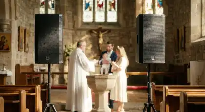
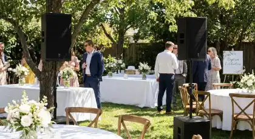
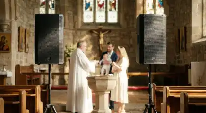
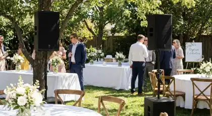

RENTA DE
BOCINAS PARA BAUTIZOS
Audio discreto y elegante para ceremonias religiosas y celebraciones familiares
¿Deseas que cada palabra de la ceremonia de bautizo de tu bebé se escuche con claridad y respeto en el templo? La renta de bocinas para bautizos de RESOIL es la solución profesional que garantiza audio discreto y elegante desde la ceremonia religiosa hasta la celebración familiar. Eliminamos el riesgo de volumen inadecuado en lugares sagrados o audio deficiente en la recepción, ofreciendo un servicio respetuoso y profesional en CDMX y Estado de México.
Nuestros sistemas de audio especializados combinan equipos discretos con operadores experimentados que entienden la solemnidad de las ceremonias religiosas. Cada instalación de RESOIL está diseñada para amplificar la voz del sacerdote, música sacra y lecturas sin interferir con la reverencia del momento. Con nuestro sonido profesional para bautizos, convertimos tu celebración en una experiencia auditiva perfecta y respetuosa.
Galería de Bautizos Realizados
Instalaciones profesionales de audio discreto para ceremonias religiosas y celebraciones familiares en CDMX y Estado de México
 



Estas imágenes son algunos de nuestros eventos de éxito con audio profesional para bautizos en CDMX y Estado de México. Cada instalación refleja nuestro compromiso con la discreción y respeto que caracteriza a RESOIL en ceremonias religiosas.
Por Qué la Renta de Bocinas Profesionales Es la Decisión Correcta para el Bautizo
En un día tan especial y sagrado como el bautizo de tu bebé, la diferencia entre una ceremonia que se disfruta y una que se padece está en la calidad del sonido discreto. El audio profesional para ceremonias religiosas no es solo equipo: es una inversión estratégica en la experiencia espiritual de tus invitados. En RESOIL, entendemos que cada bautizo es único, y nuestro servicio de renta de bocinas está diseñado para respetar la solemnidad del templo mientras garantiza claridad perfecta.
¿Por qué las familias más exigentes y parroquias en CDMX y Estado de México eligen RESOIL? Porque ofrecemos más que bocinas: entregamos tranquilidad total y respeto por la ceremonia. Nuestro equipo profesional maneja todo con discreción, desde la instalación silenciosa antes de la misa hasta la operación invisible durante la ceremonia, permitiéndote disfrutar sin preocupaciones este momento sagrado.
Aplicaciones Estratégicas: Dónde Brilla Nuestro Sonido Profesional
Momentos del Bautizo Donde el Audio Es Crítico
Ceremonia Religiosa en Templo
Audio discreto y cristalino para la homilía del sacerdote, oraciones y bendiciones. Micrófonos inalámbricos de diadema o solapa para sacerdotes que permiten movimiento natural durante el ritual. Bocinas direccionales que evitan reverberación en templos con acústica compleja.
Lectura del Padrino/Madrina
Micrófonos inalámbricos premium que garantizan que cada palabra de lecturas bíblicas y compromisos de padrinos se escuche con claridad. Sistema anti-feedback que elimina chirridos en espacios con acústica difícil típica de iglesias antiguas.
Música Sacra (Órgano/Coro)
Amplificación respetuosa de música sacra, coros eclesiásticos y organistas. Micrófonos de condensador especializados para capturar la riqueza armónica de instrumentos litúrgicos. Mezcla profesional que preserva la solemnidad del momento.
Recepción Familiar
Transición perfecta de lo sagrado a lo festivo con audio ambiental elegante para la recepción. Música de fondo a volumen controlado que permite conversaciones cómodas entre familiares. Ideal para salones de eventos, jardines o casas particulares.
Fotos y Convivencia
Sistema de audio distribuido que crea ambiente agradable durante la sesión de fotos y convivencia sin saturar el espacio. Micrófonos inalámbricos para palabras de agradecimiento de los padres y padrinos durante el brindis familiar.
Celebración al Aire Libre
Equipos resistentes para ceremonias en jardines, patios o espacios abiertos de la parroquia. Cálculos acústicos especializados donde el sonido se dispersa naturalmente. Instalación discreta que no interfiere con la decoración religiosa del evento.
La versatilidad y discreción de nuestros sistemas profesionales los convierte en la solución perfecta para cualquier tipo de bautizo. Desde ceremonias íntimas en capillas hasta celebraciones familiares grandes, nuestro audio se adapta a cualquier espacio sagrado y festivo.
Paquetes de Audio para Bautizos: Soluciones para Cada Escala
RESOIL ofrece 5 paquetes escalables de renta de bocinas para bautizos, desde ceremonias íntimas hasta celebraciones familiares grandes. Cada paquete incluye operador profesional, instalación discreta, operación invisible durante el evento y desmontaje. Las especificaciones técnicas se traducen directamente en experiencias sonoras perfectas y respetuosas.
| Paquete | Invitados | Potencia RMS | Equipamiento | Ideal Para | Operador Incluido |
|---|---|---|---|---|---|
| Íntimo | 30-50 personas | 800W RMS | 2 bocinas discretas + mezcladora + 2 micrófonos | Capillas pequeñas, ceremonias familiares, bautizos privados | Operador 4 horas |
| Familiar | 50-80 personas | 1,200W RMS | 2 bocinas activas + consola digital + 3 micrófonos | Parroquias medianas, salones de eventos, jardines | Operador 5 horas |
| Tradicional | 80-120 personas | 2,000W RMS | 4 bocinas direccionales + procesador DSP + 4 micrófonos | Iglesias grandes, templos, recepciones amplias | Operador 6 horas |
| Premium | 120-200 personas | 3,000W RMS | 6 bocinas line array + mixing avanzado + 6 micrófonos | Catedrales, celebraciones grandes, eventos en jardines amplios | Operador 8 horas + asistente |
| Celebración Grande | 200-350 personas | 5,000W RMS | Sistema completo line array + subwoofers + monitoreo + 8 micrófonos | Mega celebraciones, templos monumentales, eventos masivos | 2 operadores + técnico |
Especificaciones Técnicas Universales (Todos los Paquetes)
- ✓ Marcas Premium: JBL EON, QSC CP-Series, Yamaha DBR (audio de alta fidelidad y discreción)
- ✓ Micrófonos Especializados: Shure o Sennheiser de diadema/solapa para sacerdotes (2-8 unidades según paquete)
- ✓ Consolas Digitales: Yamaha o Allen & Heath con control de volumen discreto y EQ especializado para templos
- ✓ Bocinas Direccionales: Cobertura focalizada que minimiza reverberación en espacios con acústica compleja
- ✓ Operador Profesional: Especializado en ceremonias religiosas con total discreción y respeto
- ✓ Instalación Invisible: Cableado oculto, equipos en negro/blanco según decoración del templo
- ✓ Cobertura Geográfica: CDMX y Estado de México (sin costo adicional en zona metropolitana)
- ✓ Garantía: Equipo de respaldo en sitio + seguro de responsabilidad civil incluido
Solicita tu Cotización de Bocinas para Bautizos
Completa el formulario con los detalles del bautizo y recibe una cotización personalizada al instante vía WhatsApp. Nuestro equipo te responderá en menos de 30 minutos.
Preguntas Frecuentes sobre Renta de Bocinas para Bautizos
Resuelve todas tus dudas sobre nuestro servicio especializado de audio profesional para ceremonias de bautizo
Absolutamente. Nuestro servicio está específicamente diseñado para ceremonias religiosas con total respeto y discreción.
Instalación silenciosa: Llegamos 90 minutos antes de la ceremonia para instalación completa sin interrumpir actividades del templo.
Equipos discretos: Bocinas en negro o blanco según decoración del templo, cableado oculto bajo alfombras o por pasillos laterales.
Volumen respetuoso: Amplificación controlada que respeta la solemnidad del espacio sagrado sin saturar la acústica natural del templo.
Operador invisible: Nuestro técnico opera desde ubicación discreta sin llamar la atención durante la ceremonia.
Trabajamos regularmente con parroquias, iglesias y catedrales en CDMX con aprobación total de sacerdotes y coordinadores religiosos.
Ofrecemos tres opciones según las preferencias del sacerdote y las normas de la parroquia:
Micrófono de Diadema (Recomendado): Sennheiser o Shure de diadema ultra-discreto en color piel que se oculta fácilmente. Permite total libertad de movimiento durante el ritual del bautismo, mantiene distancia constante de la boca para volumen uniforme.
Micrófono de Solapa: Clip-on profesional que se engancha en la vestimenta sacerdotal. Totalmente discreto, ideal para sacerdotes que prefieren no usar diadema. Captación omnidireccional para voz natural.
Micrófono de Mano Inalámbrico: Para sacerdotes que prefieren control directo del micrófono. Modelo Shure SM58 o equivalente con batería de larga duración.
Todos incluyen: Sistema anti-feedback activo, baterías de respaldo, receptor profesional con diversidad de antena para señal estable.
Coordinamos previamente con el sacerdote para elegir la opción más cómoda según sus preferencias litúrgicas.
Sí, nos especializamos en amplificación respetuosa de música litúrgica para ceremonias de bautizo:
Órgano de iglesia: Micrófonos de condensador especializados (AKG C414 o equivalente) que capturan la riqueza armónica completa del órgano. Posicionamiento estratégico para sonido natural sin distorsión.
Coros eclesiásticos: Micrófonos aéreos o de condensador que capturan el conjunto coral preservando la mezcla natural de voces. Ideal para Ave María, Aleluya u otros cantos sacros.
Música grabada: Reproducción profesional desde USB, Spotify, CD o conexión directa desde smartphone. Control de volumen preciso para transiciones suaves entre momentos de la ceremonia.
Instrumentos en vivo: Amplificación de guitarras, violines, flautas u otros instrumentos que acompañen la ceremonia con micrófonos profesionales especializados.
Nuestros operadores tienen experiencia en mezcla de audio litúrgico preservando la solemnidad y reverencia apropiada para ceremonias religiosas.
Transición completa de ceremonia religiosa a celebración familiar:
Audio ambiental elegante: Música de fondo instrumental o playlist personalizada a volumen controlado que permite conversaciones cómodas entre familiares.
Micrófonos para brindis: 2-4 micrófonos inalámbricos disponibles para palabras de agradecimiento de padres, padrinos y familiares durante la recepción.
Reproducción musical: Música desde Spotify, USB o playlist personalizada. Control de géneros: infantil, clásica, jazz, ambiental según preferencias familiares.
Cobertura de espacios: Sistema distribuido que cubre salón principal, jardín, área de comida y zona de fotos con volumen uniforme.
Operador dedicado: Técnico profesional que gestiona volumen, transiciones musicales y micrófono durante toda la recepción.
El paquete completo ceremonia + recepción garantiza continuidad perfecta sin necesidad de contratar proveedores separados. Instalación única que cubre ambos momentos.
Sí, siempre recomendamos coordinación previa con el sacerdote o coordinador de la parroquia:
Proceso recomendado:
- Informar al sacerdote que contratarás servicio profesional de audio para el bautizo
- Mencionar que RESOIL tiene experiencia en ceremonias religiosas con instalación discreta
- Preguntar preferencias del sacerdote sobre tipo de micrófono (diadema, solapa o mano)
- Confirmar horario de acceso al templo para instalación previa (usualmente 90 minutos antes)
- Verificar si hay restricciones sobre ubicación de equipos o cableado
Carta de presentación: Podemos proporcionar carta oficial de RESOIL para presentar al sacerdote explicando nuestro servicio y experiencia en ceremonias religiosas.
Referencias eclesiásticas: Contamos con referencias de parroquias donde hemos trabajado exitosamente que podemos compartir si el sacerdote tiene dudas.
En nuestra experiencia, el 98% de sacerdotes aprecian el audio profesional porque garantiza que todos los invitados escuchen claramente la ceremonia, especialmente abuelos y familiares con dificultades auditivas.
Generadores profesionales ultra-silenciosos incluidos en la cotización:
Generadores Honda EU2200i: Inverter silenciosos (48-57dB a 7 metros) ideales para ceremonias íntimas donde el ruido debe ser mínimo.
Autonomía extendida: 8-10 horas continuas con tanque completo, suficiente para ceremonia completa + recepción.
Instalación estratégica: Ubicación del generador a 15-20 metros de la ceremonia, oculto tras vegetación o decoración, con extensiones profesionales de calibre grueso.
Equipos de batería: Para ceremonias ultra-íntimas (+30 personas), ofrecemos bocinas portátiles con batería integrada (8-12 horas autonomía) sin necesidad de generador.
Protección climática: Certificación IP65 en todos los equipos resistentes a lluvia ligera. Cubiertas impermeables para protección adicional en caso de clima inestable.
Especialistas en bautizos en jardines, patios de hacienda, terrazas y espacios al aire libre sin infraestructura eléctrica. El costo del generador se transparenta en la cotización inicial.
Coordinación completa con padrinos antes y durante la ceremonia:
Reunión previa (recomendada): 30 minutos antes de la ceremonia, nuestro operador se presenta brevemente con padrinos y personas que harán lecturas para:
- Explicar cómo usar el micrófono inalámbrico (encendido/apagado, distancia correcta)
- Realizar prueba rápida de voz para ajustar volumen
- Confirmar orden de participación según protocolo de la ceremonia
- Entregar micrófono a cada participante en su momento correspondiente
Durante la ceremonia: Operador entrega y recoge micrófonos discretamente en cada momento. Sistema de micrófono en standby que evita feedback cuando no está en uso.
Micrófonos dedicados: Cada padrino/lector tiene micrófono individual pre-configurado con su nombre para evitar confusiones.
Respaldo: Micrófonos adicionales listos en caso de nerviosismo o olvido al momento de la lectura.
Nuestros operadores tienen sensibilidad especial para manejar momentos emotivos con discreción, especialmente cuando padrinos se emocionan durante lecturas importantes.
Instalación profesional 90 minutos antes del inicio de la ceremonia:
Hora -90 minutos: Llegada del equipo técnico y descarga de equipos en zona discreta del templo o salón.
Hora -75 minutos: Instalación de bocinas, cableado oculto, consola de mezcla en ubicación estratégica. Coordinación con decoradores para evitar interferencias.
Hora -45 minutos: Conexión de micrófonos, pruebas de señal, ajuste de volumen y ecualización según acústica específica del espacio.
Hora -30 minutos: Prueba con sacerdote (si está disponible) para verificar comodidad del micrófono y nivel de volumen preferido.
Hora -15 minutos: Sistema completo operativo en standby. Reunión breve con padrinos/lectores para instrucciones de micrófonos.
Hora 0: Ceremonia inicia con todo el equipo funcionando perfectamente. Operador en posición discreta monitoreando todo.
Desmontaje: 30-45 minutos después de finalizar la ceremonia/recepción, permitiendo que familia y invitados se retiren primero sin prisas.
Trabajamos con total discreción respetando horarios litúrgicos y actividades previas del templo. Nunca interferimos con misas u otros servicios religiosos.
Precios transparentes desde $2,800 MXN según escala del bautizo:
Paquete Íntimo (30-50 personas): $2,800 - $3,500 MXN
Paquete Familiar (50-80 personas): $4,200 - $5,200 MXN
Paquete Tradicional (80-120 personas): $6,500 - $8,000 MXN
Paquete Premium (120-200 personas): $9,500 - $12,000 MXN
Paquete Celebración Grande (200-350 personas): $14,000 - $18,000 MXN
Todos los paquetes incluyen:
- Equipos profesionales completos (bocinas, mezcladora, micrófonos, cables)
- Operador técnico especializado en ceremonias religiosas
- Instalación 90 minutos antes y desmontaje después del evento
- Micrófonos inalámbricos Shure/Sennheiser (cantidad según paquete)
- Sistema anti-feedback y procesamiento de audio
- Equipo de respaldo completo en sitio
- Transporte dentro de zona metropolitana CDMX
- Seguro de responsabilidad civil
- Facturación CFDI inmediata
Servicios adicionales: Generadores ($800-$1,500), horas extra ($500-$800/hora), servicios en zonas alejadas (cotización especial).
Haz del Bautizo un Momento Inolvidable con Audio Profesional RESOIL
Para Familias Exigentes: El bautizo de tu bebé es un momento sagrado que merece ser escuchado perfectamente por cada invitado. El audio profesional discreto no es un lujo, es la garantía de que cada palabra del sacerdote, cada oración y cada lectura de los padrinos se escuche con claridad y respeto en el templo.
Con RESOIL, no solo rentas bocinas: inviertes en tranquilidad total y respeto por la ceremonia. Nuestro equipo profesional maneja cada aspecto técnico con discreción para que tú y tus invitados disfruten sin preocupaciones este momento sagrado. Operador experto incluido, equipos discretos y 15 años de experiencia en ceremonias religiosas.
Para Coordinadores y Padrinos: Tu responsabilidad en organizar un bautizo perfecto incluye garantizar que todos escuchen la ceremonia. RESOIL es tu aliado estratégico en audio profesional discreto. Operamos con el respeto y excelencia que las ceremonias religiosas merecen, transformando cualquier templo en una experiencia auditiva perfecta.
Facturación CFDI inmediata, contratos transparentes, instalación silenciosa certificada y garantía total incluida. Porque entendemos que en ceremonias sagradas, la confianza se construye con discreción y resultados consistentes. Más de 800 bautizos exitosos nos respaldan.
Garantía Total: Equipo de respaldo completo en sitio • Seguro de responsabilidad civil incluido • Operador profesional especializado en ceremonias religiosas • Instalación 100% discreta garantizada